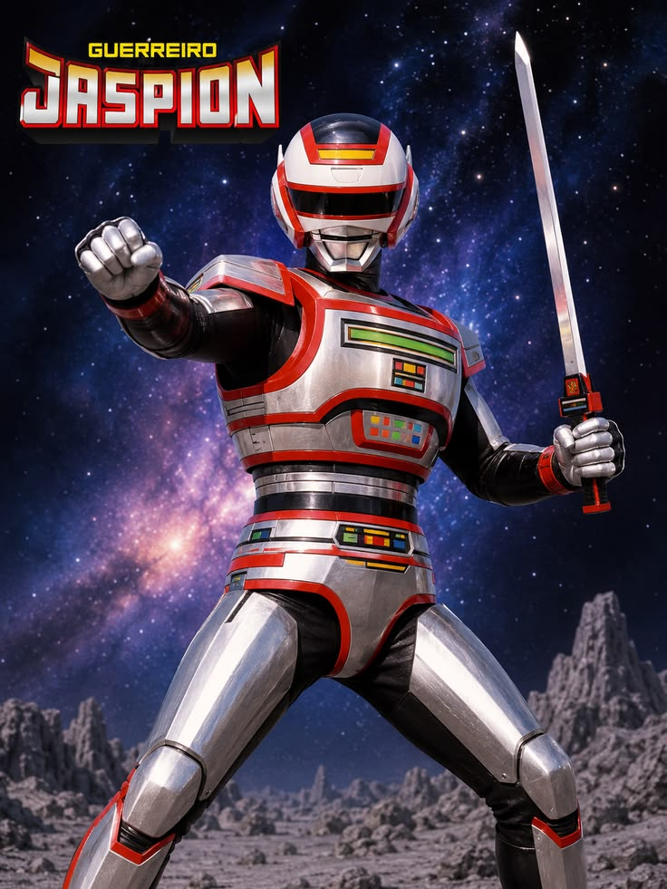
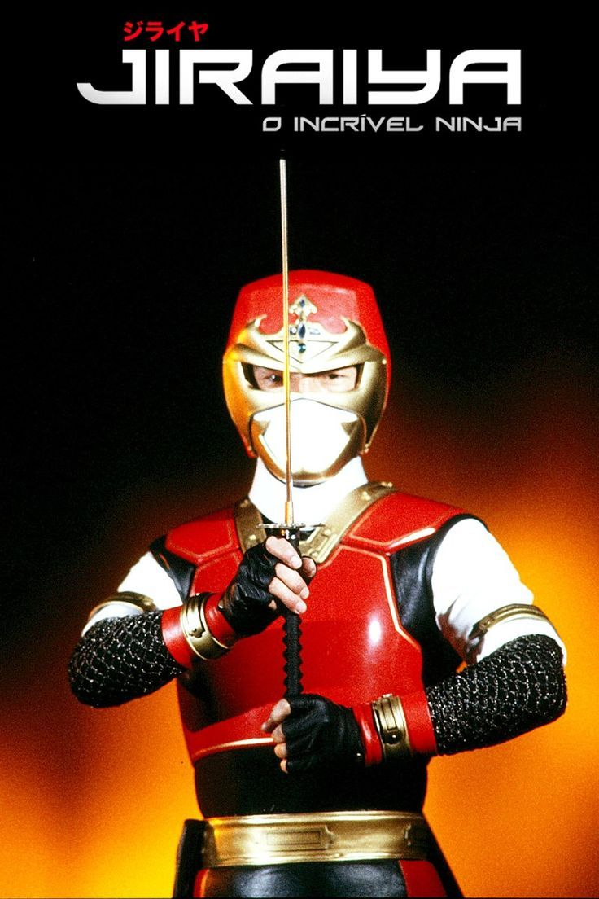
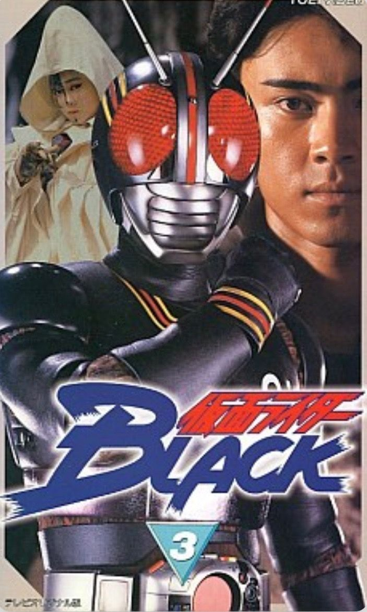
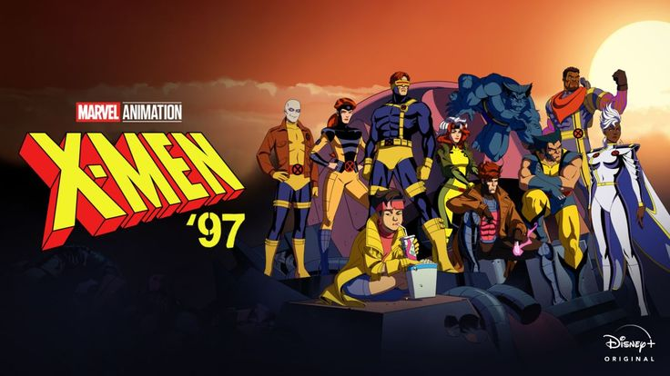
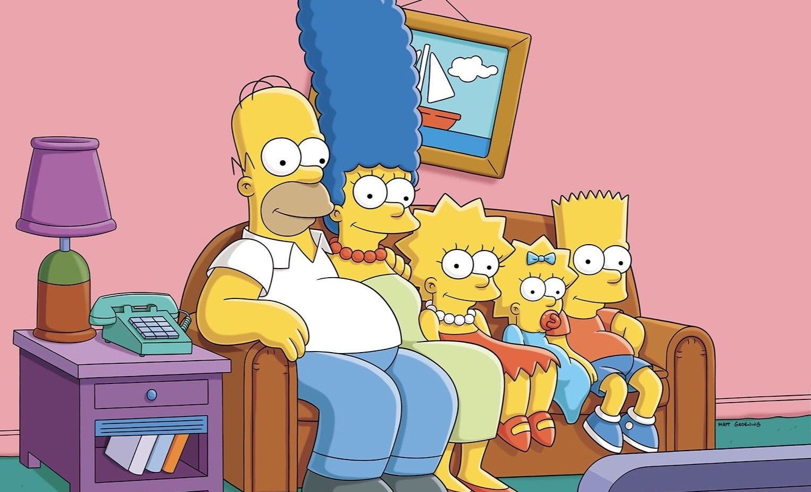
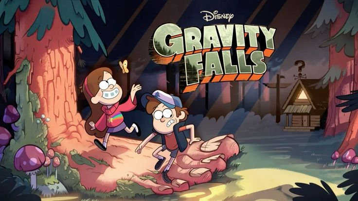

80 • 90 • 2000
HISTÓRIAS QUE ATRAVESSARAM GERAÇÕES.
Uma viagem pela TV, pelos heróis e pelas as animações que transformaram tardes comuns em grandes aventuras.
ANTES DOS ANOS 90
CLÁSSICOS QUE CHEGARAM PARA FICAR
Duas produções anteriores aos anos 90 que permaneceram vivas na memória de quem cresceu cercado por fantasia e aventura.

Heróis e batalhas que marcaram gerações
1986
CAVALEIROS DO ZODÍACO

Uma aventura fantástica em outro mundo
1983
CAVERNA DO DRAGÃO
FAIXA ESPECIAL
HERÓIS QUE DOMINARAM A TV
Tokusatsu, ação e personagens que viraram memória afetiva.
METAL HERO
JASPION

NINJA HERO
JIRAIYA

TOKUSATASU
KAMEN RIDER BLACK

O PASSADO CONTINUA PRESENTE
NOVAS PRODUÇÕES, VELHAS EMOÇÕES

01
CONTINUAÇÃO
X-MEN '97

02
CULTURA POP
OS SIMPSONS

03
MISTÉRIO